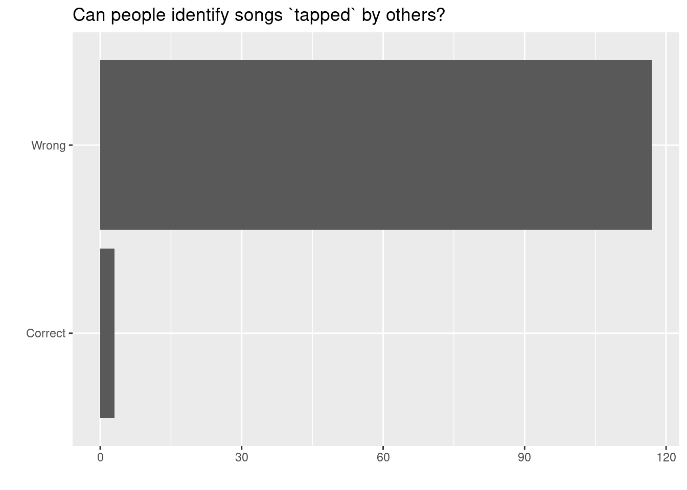
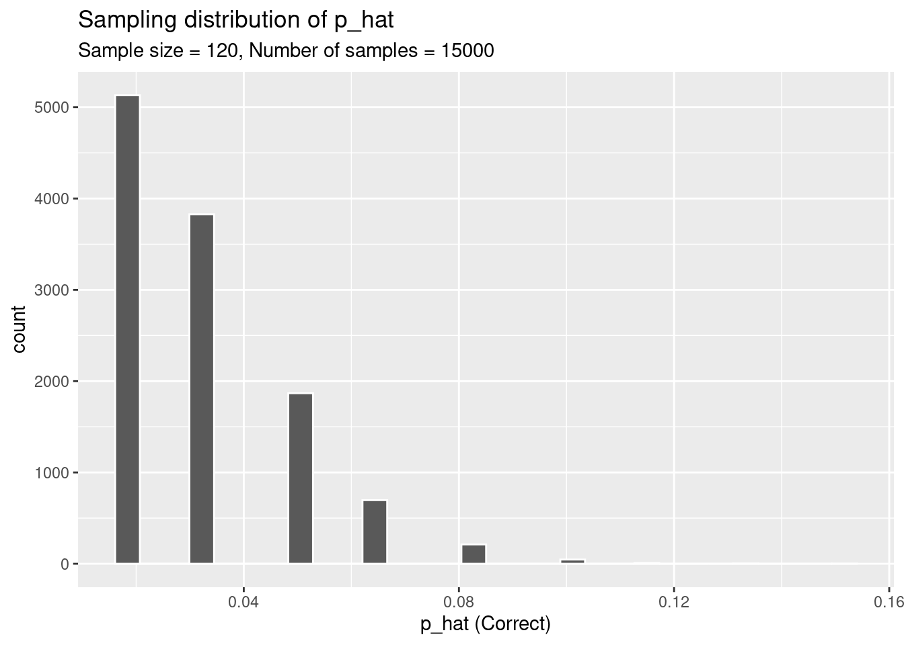

# Note: you may need to first install the openintro package by running
# install.packages("openintro") directly in your R console
# Unpacking our tools and equipment
library(tidyverse)
library(openintro)
library(infer)SDS 220: Lecture 15 Handout
Bootstrapping in R
Tapers Vs Listeners
A Stanford University graduate student named Elizabeth Newton conducted an experiment using the tapper-listener game. In her study, she recruited 120 tappers and 120 listeners into the study. About 50% of the tappers expected that the listener would be able to guess the song. Newton wondered, is 50% a reasonable expectation?
In Newton’s study, only 3 out of 120 listeners (\(\hat{p} = 0.025\)) were able to guess the tune! That seems like quite a low number which leads the researcher to ask: what is the true proportion of people who can guess the tune?
How close can we expect a sample proportion to be to the true/population proportion? For instance, if 0.025% of 120 sampled listeners could identify the tune, how close is 0.025% to the actual percentage in the entire population of 331 million people in the USA?
Getting Started
Let’s start by setting up our R coding environment! In this lab, we will use functions from the tidyverse package and data from the openintro package; we’ll go ahead and load those packages now:
Introducing the Data
To answer the question, we will again use a simulation. We will use a bootstrapping in order to better understand the behavior of the statistic. We will first create the original data set.
tapper_listener <- tibble(
listener_results = c(rep("Wrong", 117), rep("Correct", 3))
)We can quickly visualize the distribution of these responses using a bar plot.
ggplot(tapper_listener, aes(x = listener_results)) +
geom_bar() +
labs(
x = "", y = "",
title = "Can people identify songs `tapped` by others?"
) +
coord_flip() 
We can also obtain summary statistics to confirm we constructed the data frame correctly.
tapper_listener |>
count(listener_results) |>
mutate(p = n /sum(n))# A tibble: 2 × 3
listener_results n p
<chr> <int> <dbl>
1 Correct 3 0.025
2 Wrong 117 0.975Bootstrap a Single Sample
With bootstrapping from a proportion there are two techniques that we can use. We can sample from the original data set using the sample_n() function.
Sample from original data set:
samp1 <- tapper_listener |>
slice_sample(n = 120, replace = TRUE)
#sample_nThis command collects a simple random sample of size 120 from the tapper_listener dataset, and assigns the result to samp1.
To view your bootstrapped proportion, you can use the following code:
samp1 %>%
count(listener_results) |>
mutate(p_hat = n /sum(n))# A tibble: 2 × 3
listener_results n p_hat
<chr> <int> <dbl>
1 Correct 3 0.025
2 Wrong 117 0.975Exercise 1
Would you expect the sample proportion to match the sample proportion of another student’s sample? Why, or why not? If the answer is no, would you expect the proportions to be somewhat different or very different? Ask a student team to confirm your answer.
Excercise 2
Take a second sample, and call it samp2. How does the sample proportion of samp2 compare with that of samp1?
Multiple Bootstrap Samples
Not surprisingly, every time you take another random sample, you might get a different sample proportion. It’s useful to get a sense of just how much variability you should expect when estimating the population mean this way. The distribution of sample proportions, called the sampling distribution (of the proportion), can help you understand this variability and behavior of a statistic.
sample_props <- tapper_listener |>
rep_sample_n(size = 60, reps = 15000, replace = TRUE) |>
count(listener_results) |>
mutate(p_hat = n /sum(n)) |>
filter(listener_results == "Correct")And we can visualize the distribution of these proportions with a histogram.
ggplot(data = sample_props, aes(x = p_hat)) +
geom_histogram( color = "white") +
labs(
x = "p_hat (Correct)",
title = "Sampling distribution of p_hat",
subtitle = "Sample size = 120, Number of samples = 15000"
)`stat_bin()` using `bins = 30`. Pick better value with `binwidth`.
The idea behind the rep_sample_n() function is repetition. Earlier, you took a single sample of size \(n\) (120) from the population of all people in the population. With this new function, you can repeat this sampling procedure rep times in order to build a distribution of a series of sample statistics, which is called the sampling distribution.
Our sampling distribution has its own mean and standard deviation which we can calculate.
mean(sample_props$p_hat)[1] 0.03192572sd(sample_props$p_hat)[1] 0.01725819Excercise 3
How many elements are there in sample_props? Describe the sampling distribution, and be sure to specifically note its center.
Excercise 4
In the chunk below modify the code to create a sampling distribution of 15000 sample proportions from samples of size 40, and put them in a data frame named sample_props_small. Print the output. How many observations are there in this object called sample_props_small? What does each observation represent?
sample_props_small <- tapper_listener |>
rep_sample_n(size = ___, reps = ___, replace = TRUE) |>
count(___) |>
mutate(prop = n/sum(n)) |>
filter(listener_results =="Correct")
sample_props_small Excercise 5
Calculate the mean and standard deviation for sample_props_small. Plot a histogram for sample_props_small. How do the mean, standard deviation, and distribution compare to sample_props?
Excercise 6
Crank up the size (90,120,240) of your bootstrap sample and graph the results. What do you notice? What if we did more reps and left the sample size at 60?
Excercise 6
What are some potential problems with using bootstrapping with this data set?